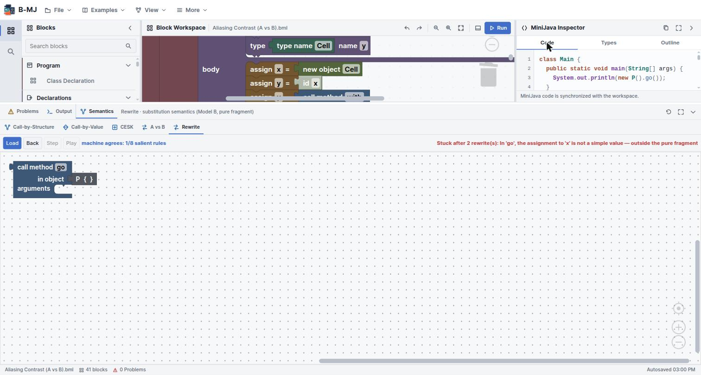

Your first MiniJava program
MiniJava is Java with the parts that complicate a compiler removed — no
interfaces, no overloading, no static members beyond main. What is left is small enough
to hold in your head and still large enough to have objects, inheritance and a heap.
The starter skeleton
A fresh workspace is not empty. It contains the smallest well-formed program, which is also the shape every MiniJava program has:
class MainClassName {
public static void main(String[] args) {
System.out.println(0);
}
}On the workspace this is a Goal block — the grammar's start symbol — holding
a main class, with a second socket labelled Class waiting for your own class
declarations. A MiniJava program is exactly one main class plus any number of other
classes, and the Goal block is that rule made visible.
And you would not want to: it is the root the type checker and every semantics view start from.
Only blocks reachable from Goal are checked and executed, which is what lets you
leave half-built scratch blocks lying on the canvas without them generating errors.
Your first program
Change what main prints:
- Click the
MainClassNamefield and give the class a name. - From Values, drag an
Integerblock into theSystem.out.printlnsocket, replacing the0. - To compute something instead, drop an Arithmetic block from Expressions into that socket and fill its two operands.
- Press ▶ Run.
Local variables go in the method's variables socket as Variable Declaration blocks, each taking a type and a name. MiniJava requires all declarations before any statements, and the block layout enforces that by giving them their own socket rather than letting you interleave them.
Adding a class
Drag a Class Declaration from the Program category into the
Class socket under the main class. A class declaration has four sockets:
| Socket | Takes |
|---|---|
| name | The class name, and optionally extends a superclass |
| variables | Field declarations |
| methods | Method declarations |
A Method Declaration in turn takes a return type, a name, a stack of
Formal Parameter blocks, local variables, statements, and a return value
expression. Every MiniJava method returns a value — there is no void except on
main.
Instances come from the new Object block in Values; call a method with
Method Call from Expressions, which takes the receiver in its
in object socket and a stack of Argument Item blocks.
Running it
▶ Run in the workspace title bar executes the program to completion under the faithful MiniJava semantics and puts anything printed on the Inspector's Output tab.
Whichever stepper — or Run — most recently produced output owns the Output tab. So if you run the program, then step it on the CESK machine, the tab shows the machine's output, not a merged transcript of both.
For anything beyond the final answer, use the Semantics dock. That is where the program stops being a thing that produces a number and starts being a thing you can watch execute.
The code editor
The Inspector's Code tab shows the generated MiniJava with syntax highlighting — and it is editable. Type Java-ish text, and B-MJ parses it back into blocks.

This is genuinely useful for larger programs: writing a nested loop as text is faster than assembling it, and once it is blocks you can step it. The parser is the same one the round-trip tests exercise — text → blocks → text is checked to be stable.
Reading the status bar
- File name —
Project.javaby default, or the.bmlyou loaded. - Blocks — the block count. The starter skeleton is 4; the Aliasing Contrast example is 41.
- Problems — the type-checker diagnostic count, mirroring the Problems tab.
- Autosave — Autosave ready, or Autosaved with a time.